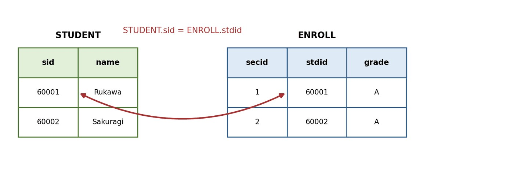
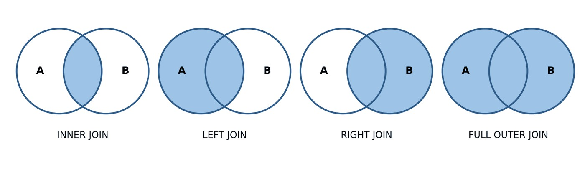
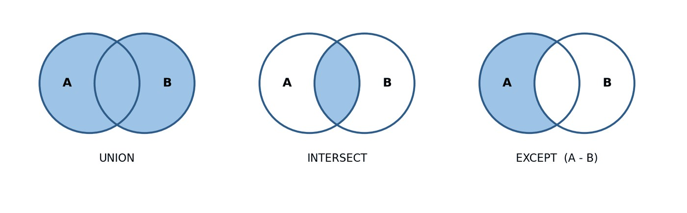

บทที่ 6 · การแสดงข้อมูลจากหลายตาราง (JOIN)
INNER JOIN, LEFT/RIGHT JOIN, Self Join, CROSS JOIN, UNION/INTERSECT/EXCEPT, Subquery และการใช้ผลลัพธ์ไปจัดการข้อมูล (INSERT…SELECT, UPDATE/DELETE ที่อ้างอิงตารางอื่น, UPDATE + CASE)
- อธิบายหลักการเชื่อมตารางและเงื่อนไขการเชื่อมได้
- เขียน INNER JOIN ระหว่าง 2 ตาราง และมากกว่า 2 ตารางได้
- เลือกใช้ LEFT / RIGHT / FULL OUTER JOIN และ Self Join ได้เหมาะสม
- ใช้ UNION, INTERSECT, EXCEPT ได้
- เขียน Subquery ทั้งแบบอิสระและแบบสัมพันธ์กัน (EXISTS) ได้
- ใช้ผลลัพธ์จาก SELECT ร่วมกับ INSERT / UPDATE / DELETE และ UPDATE + CASE ได้
- 6.1 แนวคิดของการเชื่อมตาราง
- 6.2 การเชื่อมตารางแบบภายใน (INNER JOIN)
- 6.3 ชื่อแทนตาราง และการเชื่อมมากกว่า 2 ตาราง
- 6.4 การเชื่อมตารางแบบภายนอก (OUTER JOIN)
- 6.5 Self Join และ CROSS JOIN
- 6.6 ตัวดำเนินการเชิงเซต
- 6.7 คำสั่ง SELECT ซ้อน (Subquery)
- 6.8 การจัดการข้อมูลด้วยผลลัพธ์จากคำสั่ง SELECT
- 6.9 การแก้ไขข้อมูลตามเงื่อนไขด้วย CASE
- 6.10 ข้อผิดพลาดที่พบบ่อยในการเชื่อมตารางและการจัดการข้อมูล
6.1 แนวคิดของการเชื่อมตาราง
“นิสิตชื่ออะไรบ้างที่ได้เกรด A” — ชื่ออยู่ใน student เกรดอยู่ใน enroll จึงต้องนำ 2 ตารางมาต่อกันด้วยคอลัมน์ที่มีค่าตรงกัน student.stdid = enroll.stdid

เชื่อม n ตาราง ต้องมีเงื่อนไขการเชื่อมอย่างน้อย n − 1 เงื่อนไข ถ้าขาด จะเกิด ผลคูณคาร์ทีเซียน — ทุกแถวจับคู่กับทุกแถว เช่น student 22 แถว × enroll 100 แถว = 2,200 แถวที่ไม่มีความหมาย
SELECT s.name, e.grade FROM student s, enroll e WHERE s.stdid = e.stdid;
| name | grade |
|---|---|
| Rukawa | A |
| Rukawa | C |
| Rukawa | B |
| Rukawa | A |
| Rukawa | A |
SELECT s.name, e.grade
FROM student s
INNER JOIN enroll e ON s.stdid = e.stdid;| name | grade |
|---|---|
| Rukawa | A |
| Rukawa | C |
| Rukawa | B |
| Rukawa | A |
| Rukawa | A |
SELECT COUNT(*) AS n_rows FROM student, enroll;
| n_rows |
|---|
| 2200 |
6.2 การเชื่อมตารางแบบภายใน (INNER JOIN)
คืนเฉพาะแถวที่จับคู่ได้ทั้งสองฝั่ง แถวที่ไม่มีคู่ถูกตัดทิ้ง

SELECT s.stdid, s.name, e.secid, e.grade
FROM student s
INNER JOIN enroll e ON s.stdid = e.stdid
ORDER BY s.stdid, e.secid;| stdid | name | secid | grade |
|---|---|---|---|
| 60001 | Rukawa | 1 | A |
| 60001 | Rukawa | 2 | C |
| 60001 | Rukawa | 6 | B |
| 60001 | Rukawa | 8 | A |
| 60001 | Rukawa | 10 | A |
| 60001 | Rukawa | 15 | A |
| 60001 | Rukawa | 19 | B |
| 60001 | Rukawa | 31 | A |
| 60001 | Rukawa | 45 | B |
| 60002 | Sakuragi | 1 | B |
SELECT sec.secid, sub.subid, sub.name, sec.lecid, sec.term
FROM section sec
INNER JOIN subject sub ON sec.subid = sub.subid
WHERE sec.term = '2023-1'
ORDER BY sec.secid;| secid | subid | name | lecid | term |
|---|---|---|---|---|
| 1 | CS001 | Programming | t01 | 2023-1 |
| 2 | CS004 | Database | t01 | 2023-1 |
| 3 | CS005 | Graphics | t01 | 2023-1 |
| 4 | CS003 | Web Design | t02 | 2023-1 |
| 5 | CS006 | Mobile Apps | t02 | 2023-1 |
SELECT s.stdid, s.name, e.secid
FROM student s
INNER JOIN enroll e ON s.stdid = e.stdid
WHERE e.grade = 'A'
ORDER BY s.stdid, e.secid;| stdid | name | secid |
|---|---|---|
| 60001 | Rukawa | 1 |
| 60001 | Rukawa | 8 |
| 60001 | Rukawa | 10 |
| 60001 | Rukawa | 15 |
| 60001 | Rukawa | 31 |
| 60002 | Sakuragi | 2 |
| 60002 | Sakuragi | 12 |
| 60003 | Mitsui | 19 |
| 60004 | Sendoh | 12 |
| 60004 | Sendoh | 13 |
จงแสดงรหัสกลุ่มเรียน ภาคเรียน และชื่ออาจารย์ผู้สอน ของทุกกลุ่มเรียนในภาค 2025-3
SELECT sec.secid, sec.term, l.name AS lecturer
FROM section sec
INNER JOIN lecturer l ON sec.lecid = l.lecid
WHERE sec.term = '2025-3'
ORDER BY sec.secid;| secid | term | lecturer |
|---|---|---|
| 43 | 2025-3 | Post Malone |
| 44 | 2025-3 | Post Malone |
| 45 | 2025-3 | Steve Roger |
| 46 | 2025-3 | Yoda |
| 47 | 2025-3 | Yoda |
| 48 | 2025-3 | Frieza |
| 49 | 2025-3 | Piccolo |
| 50 | 2025-3 | Gohan |
6.3 ชื่อแทนตาราง และการเชื่อมมากกว่า 2 ตาราง
ชื่อแทนตาราง (Table Alias) ช่วยให้คำสั่งสั้นลง และจำเป็นเมื่อเชื่อมตารางเดียวกันมากกว่า 1 ครั้ง
SELECT s.name AS student,
sub.name AS subject,
sec.term,
e.grade
FROM enroll e
INNER JOIN student s ON e.stdid = s.stdid
INNER JOIN section sec ON e.secid = sec.secid
INNER JOIN subject sub ON sec.subid = sub.subid
ORDER BY s.name, sec.term;| student | subject | term | grade |
|---|---|---|---|
| NULL | Programming | 2023-1 | C |
| NULL | Mobile Apps | 2023-1 | C |
| NULL | Database | 2023-1 | D |
| NULL | Web Design | 2023-2 | B |
| NULL | Database | 2024-1 | B |
| NULL | Discrete Math | 2024-2 | A |
| NULL | Mathematics | 2024-2 | A |
| NULL | Java | 2024-2 | A |
| NULL | Web Design | 2025-1 | NULL |
| NULL | Mathematics | 2025-1 | NULL |
แถวแรก ๆ มี student เป็น NULL — เพราะนิสิต 60005 และ 70022 ไม่มีชื่อในตาราง แต่ยังลงทะเบียนได้ปกติ (การ JOIN ใช้ stdid ไม่ใช้ name)
SELECT l.name AS lecturer, sub.name AS subject, sec.term
FROM section sec
INNER JOIN lecturer l ON sec.lecid = l.lecid
INNER JOIN subject sub ON sec.subid = sub.subid
WHERE sec.term = '2024-2'
ORDER BY l.name, sub.name;| lecturer | subject | term |
|---|---|---|
| IronMan | Discrete Math | 2024-2 |
| Peter Parker | Graphics | 2024-2 |
| Peter Parker | Java | 2024-2 |
| Peter Parker | Programming | 2024-2 |
| Post Malone | Java | 2024-2 |
| Steve Roger | AI | 2024-2 |
| Steve Roger | Java | 2024-2 |
| Steve Roger | Project | 2024-2 |
| Yoda | Mathematics | 2024-2 |
SELECT sub.subid, sub.name, COUNT(*) AS n_enroll
FROM enroll e
INNER JOIN section sec ON e.secid = sec.secid
INNER JOIN subject sub ON sec.subid = sub.subid
GROUP BY sub.subid, sub.name
ORDER BY n_enroll DESC, sub.subid;| subid | name | n_enroll |
|---|---|---|
| CS004 | Database | 17 |
| CS001 | Programming | 16 |
| CS002 | Java | 9 |
| CS008 | AI | 7 |
| MA002 | Discrete Math | 7 |
| CS003 | Web Design | 6 |
| EN001 | English | 6 |
| EN003 | Conversation | 5 |
| MA001 | Mathematics | 5 |
| CS005 | Graphics | 4 |
| CS006 | Mobile Apps | 4 |
| CS009 | Project | 4 |
| CS010 | Security | 3 |
| TH001 | Thai | 3 |
| CS007 | Robotics | 2 |
| MA003 | Statistics | 2 |
คอลัมน์ name มีทั้งใน student, subject, lecturer — ต้องระบุชื่อแทนนำหน้าเสมอ ไม่เช่นนั้น:
SELECT name, grade
FROM student s INNER JOIN enroll e ON s.stdid = e.stdid
INNER JOIN section sec ON e.secid = sec.secid
INNER JOIN subject sub ON sec.subid = sub.subid;จงแสดงทรานสคริปต์ของนิสิต 60001: ภาคเรียน รหัสวิชา ชื่อวิชา หน่วยกิต เกรด เรียงตามภาคเรียน
SELECT sec.term, sub.subid, sub.name, sub.credit, e.grade
FROM enroll e
INNER JOIN section sec ON e.secid = sec.secid
INNER JOIN subject sub ON sec.subid = sub.subid
WHERE e.stdid = '60001'
ORDER BY sec.term, sub.subid;| term | subid | name | credit | grade |
|---|---|---|---|---|
| 2023-1 | CS001 | Programming | 3 | A |
| 2023-1 | CS004 | Database | 3 | C |
| 2023-2 | CS002 | Java | 3 | B |
| 2023-3 | CS004 | Database | 3 | A |
| 2023-3 | CS008 | AI | 3 | A |
| 2024-2 | CS001 | Programming | 3 | A |
| 2024-2 | MA002 | Discrete Math | 4 | B |
| 2024-3 | CS009 | Project | 6 | A |
| 2025-3 | CS010 | Security | 3 | B |
จงแสดงชื่ออาจารย์ที่เคยสอนรายวิชา CS004 โดยไม่ให้ชื่อซ้ำ
SELECT DISTINCT l.lecid, l.name
FROM section sec
INNER JOIN lecturer l ON sec.lecid = l.lecid
WHERE sec.subid = 'CS004'
ORDER BY l.lecid;| lecid | name |
|---|---|
| t01 | Peter Parker |
| t03 | Yoda |
| t05 | IronMan |
6.4 การเชื่อมตารางแบบภายนอก (OUTER JOIN)
LEFT JOIN คืนทุกแถวของตารางซ้าย แม้ไม่มีคู่ทางขวา (เติม NULL) เหมาะกับคำถาม “ใครบ้างที่ยังไม่มี…” หรือ “แสดงทุกคนพร้อมข้อมูลเพิ่มเติม (ถ้ามี)”
SELECT s.stdid, s.name, COUNT(e.secid) AS n_enroll
FROM student s
LEFT JOIN enroll e ON s.stdid = e.stdid
GROUP BY s.stdid, s.name
ORDER BY n_enroll, s.stdid;| stdid | name | n_enroll |
|---|---|---|
| 60014 | Light | 0 |
| 60015 | Near | 0 |
| 60016 | Mello | 0 |
| 70035 | Nami | 0 |
| 70037 | Chopper | 1 |
| 60012 | Hisoka | 2 |
| 70036 | Sanji | 2 |
| 60008 | Kira | 3 |
| 70033 | Zoro | 3 |
| 60011 | Kurapika | 4 |
| 60002 | Sakuragi | 6 |
| 60003 | Mitsui | 6 |
| 60009 | Killua | 6 |
| 60013 | Gon | 6 |
| 70022 | NULL | 6 |
| 70034 | Luffy | 6 |
| 60006 | Nobita | 7 |
| 60007 | L | 7 |
| 60005 | NULL | 8 |
| 60001 | Rukawa | 9 |
| 60004 | Sendoh | 9 |
| 60010 | Gon | 9 |
ใช้ COUNT(e.secid) ไม่ใช่ COUNT(*) — เพราะแถวที่เติม NULL ก็นับเป็น 1 แถว นิสิตที่ไม่เคยลงทะเบียนจะได้ 1 แทน 0
SELECT s.stdid, s.name, s.major
FROM student s
LEFT JOIN enroll e ON s.stdid = e.stdid
WHERE e.stdid IS NULL;| stdid | name | major |
|---|---|---|
| 60014 | Light | Physics |
| 60015 | Near | Physics |
| 60016 | Mello | Physics |
| 70035 | Nami | NULL |
SELECT l.lecid, l.name, COUNT(sec.secid) AS n_section
FROM lecturer l
LEFT JOIN section sec ON l.lecid = sec.lecid
GROUP BY l.lecid, l.name
ORDER BY n_section DESC, l.lecid;| lecid | name | n_section |
|---|---|---|
| t01 | Peter Parker | 14 |
| t02 | Steve Roger | 11 |
| t03 | Yoda | 8 |
| t05 | IronMan | 6 |
| t04 | Post Malone | 4 |
| t06 | Goku | 2 |
| t07 | Vegeta | 1 |
| t08 | Cell | 1 |
| t09 | Frieza | 1 |
| t10 | Piccolo | 1 |
| t13 | Thor | 1 |
| t14 | Yoda | 1 |
| t15 | Gohan | 1 |
| t11 | Batman | 0 |
| t12 | Wolverine | 0 |
| t16 | Levi | 0 |
เงื่อนไขใน ON กับ WHERE ให้ผลต่างกัน!
โจทย์: “แสดงนิสิตสาขา Art และ Physics ทุกคน พร้อมกลุ่มเรียนที่ได้เกรด A (ถ้ามี)”
SELECT s.stdid, s.name, s.major, e.secid, e.grade
FROM student s
LEFT JOIN enroll e ON s.stdid = e.stdid AND e.grade = 'A'
WHERE s.major IN ('Art', 'Physics')
ORDER BY s.stdid;| stdid | name | major | secid | grade |
|---|---|---|---|---|
| 60007 | L | Art | 6 | A |
| 60007 | L | Art | 7 | A |
| 60007 | L | Art | 19 | A |
| 60007 | L | Art | 41 | A |
| 60008 | Kira | Art | NULL | NULL |
| 60014 | Light | Physics | NULL | NULL |
| 60015 | Near | Physics | NULL | NULL |
| 60016 | Mello | Physics | NULL | NULL |
SELECT s.stdid, s.name, s.major, e.secid, e.grade
FROM student s
LEFT JOIN enroll e ON s.stdid = e.stdid
WHERE s.major IN ('Art', 'Physics')
AND e.grade = 'A'
ORDER BY s.stdid;| stdid | name | major | secid | grade |
|---|---|---|---|---|
| 60007 | L | Art | 6 | A |
| 60007 | L | Art | 7 | A |
| 60007 | L | Art | 19 | A |
| 60007 | L | Art | 41 | A |
แบบที่ 1 Kira, Light, Near, Mello ที่ไม่เคยได้ A ยังอยู่พร้อม NULL — แบบที่ 2 แถวเหล่านั้นถูก e.grade = 'A' ใน WHERE กรองทิ้ง (NULL = 'A' ไม่เป็นจริง)
6.4.1 RIGHT JOIN และ FULL OUTER JOIN
RIGHT JOIN คืนทุกแถวของตารางขวา (นิยมสลับตารางแล้วใช้ LEFT แทน) · FULL OUTER JOIN คืนทุกแถวทั้งสองฝั่ง — MySQL ไม่รองรับ ต้องจำลองด้วย LEFT UNION RIGHT
SELECT l.lecid, l.name, sec.secid FROM lecturer l LEFT JOIN section sec ON l.lecid = sec.lecid UNION SELECT l.lecid, l.name, sec.secid FROM lecturer l RIGHT JOIN section sec ON l.lecid = sec.lecid ORDER BY secid;
| lecid | name | secid |
|---|---|---|
| t16 | Levi | NULL |
| t11 | Batman | NULL |
| t12 | Wolverine | NULL |
| t01 | Peter Parker | 1 |
| t01 | Peter Parker | 2 |
| t01 | Peter Parker | 3 |
| t02 | Steve Roger | 4 |
| t02 | Steve Roger | 5 |
จงแสดงรายวิชาทั้งหมดพร้อมจำนวนกลุ่มเรียนที่เคยเปิด โดยรายวิชาที่ไม่เคยเปิดให้แสดงเป็น 0
SELECT sub.subid, sub.name, COUNT(sec.secid) AS n_section
FROM subject sub
LEFT JOIN section sec ON sub.subid = sec.subid
GROUP BY sub.subid, sub.name
ORDER BY n_section, sub.subid;| subid | name | n_section |
|---|---|---|
| EN002 | Reading | 0 |
| EN004 | Writing | 0 |
| PH001 | Physics | 0 |
| CS010 | Security | 1 |
| MA003 | Statistics | 1 |
| TH001 | Thai | 1 |
| TH002 | Thai Writing | 1 |
| CS006 | Mobile Apps | 2 |
| CS007 | Robotics | 2 |
| EN001 | English | 2 |
| EN003 | Conversation | 2 |
| MA002 | Discrete Math | 2 |
| CS003 | Web Design | 3 |
| CS005 | Graphics | 3 |
| CS008 | AI | 3 |
| CS009 | Project | 4 |
| MA001 | Mathematics | 4 |
| CS001 | Programming | 7 |
| CS002 | Java | 7 |
| CS004 | Database | 7 |
จงแสดงกลุ่มเรียน (secid, subid, term) ที่ยังไม่มีนิสิตลงทะเบียนเลย
SELECT sec.secid, sec.subid, sec.term
FROM section sec
LEFT JOIN enroll e ON sec.secid = e.secid
WHERE e.secid IS NULL
ORDER BY sec.secid;| secid | subid | term |
|---|---|---|
| 3 | CS005 | 2023-1 |
| 24 | CS001 | 2024-1 |
| 25 | CS006 | 2024-1 |
| 26 | CS007 | 2024-1 |
| 27 | MA001 | 2024-1 |
| 29 | CS002 | 2024-2 |
| 32 | CS002 | 2024-3 |
| 33 | CS002 | 2024-3 |
| 44 | TH002 | 2025-3 |
| 52 | CS009 | 2026-1 |
6.5 Self Join และ CROSS JOIN
Self Join ใช้กับความสัมพันธ์วกกลับ — ต้องตั้งชื่อแทนตารางเดียวกันสองชื่อ
SELECT sub.subid, sub.name AS subject_name,
pre.subid AS pre_id, pre.name AS prerequisite_name
FROM subject sub
INNER JOIN subject pre ON sub.pre = pre.subid
ORDER BY sub.subid;| subid | subject_name | pre_id | prerequisite_name |
|---|---|---|---|
| CS002 | Java | CS001 | Programming |
| CS003 | Web Design | CS001 | Programming |
| CS004 | Database | CS001 | Programming |
| CS005 | Graphics | CS002 | Java |
| CS006 | Mobile Apps | CS002 | Java |
| CS007 | Robotics | CS002 | Java |
| CS008 | AI | CS002 | Java |
| CS009 | Project | CS004 | Database |
| CS010 | Security | CS004 | Database |
| EN002 | Reading | EN001 | English |
| EN003 | Conversation | EN001 | English |
| EN004 | Writing | EN002 | Reading |
| MA002 | Discrete Math | MA001 | Mathematics |
| MA003 | Statistics | MA002 | Discrete Math |
| TH002 | Thai Writing | TH001 | Thai |
SELECT sub.subid, sub.name,
IFNULL(pre.name, 'ไม่มีวิชาบังคับก่อน') AS prerequisite_name
FROM subject sub
LEFT JOIN subject pre ON sub.pre = pre.subid
ORDER BY sub.subid;| subid | name | prerequisite_name |
|---|---|---|
| CS001 | Programming | ไม่มีวิชาบังคับก่อน |
| CS002 | Java | Programming |
| CS003 | Web Design | Programming |
| CS004 | Database | Programming |
| CS005 | Graphics | Java |
| CS006 | Mobile Apps | Java |
| CS007 | Robotics | Java |
| CS008 | AI | Java |
| CS009 | Project | Database |
| CS010 | Security | Database |
| EN001 | English | ไม่มีวิชาบังคับก่อน |
| EN002 | Reading | English |
| EN003 | Conversation | English |
| EN004 | Writing | Reading |
| MA001 | Mathematics | ไม่มีวิชาบังคับก่อน |
| MA002 | Discrete Math | Mathematics |
| MA003 | Statistics | Discrete Math |
| PH001 | Physics | ไม่มีวิชาบังคับก่อน |
| TH001 | Thai | ไม่มีวิชาบังคับก่อน |
| TH002 | Thai Writing | Thai |
SELECT a.stdid AS student_a, a.name AS name_a,
b.stdid AS student_b, b.name AS name_b, a.major
FROM student a
INNER JOIN student b ON a.major = b.major AND a.stdid < b.stdid
ORDER BY a.major, a.stdid, b.stdid;| student_a | name_a | student_b | name_b | major |
|---|---|---|---|---|
| 60007 | L | 60008 | Kira | Art |
| 60001 | Rukawa | 60002 | Sakuragi | CS |
| 60001 | Rukawa | 60003 | Mitsui | CS |
| 60001 | Rukawa | 60004 | Sendoh | CS |
| 60001 | Rukawa | 60012 | Hisoka | CS |
| 60001 | Rukawa | 60013 | Gon | CS |
| 60001 | Rukawa | 70036 | Sanji | CS |
| 60002 | Sakuragi | 60003 | Mitsui | CS |
| 60002 | Sakuragi | 60004 | Sendoh | CS |
| 60002 | Sakuragi | 60012 | Hisoka | CS |
CROSS JOIN จับคู่ทุกแถว = ผลคูณคาร์ทีเซียน ปกติเป็นความผิดพลาด แต่มีประโยชน์บางกรณี เช่น สร้างตารางทุกวัน × ทุกช่วงเวลา
SELECT COUNT(*) AS n_rows FROM student CROSS JOIN lecturer;
| n_rows |
|---|
| 352 |
จงหาคู่นิสิตที่ชื่อเหมือนกัน แต่รหัสต่างกัน แสดงรหัส ชื่อ และสาขาของทั้งคู่ (ไม่ให้คู่ซ้ำ)
SELECT a.stdid, a.name, a.major, b.stdid, b.major
FROM student a
INNER JOIN student b ON a.name = b.name AND a.stdid < b.stdid;| stdid | name | major | stdid | major |
|---|---|---|---|---|
| 60010 | Gon | English | 60013 | CS |
Gon มี 2 คน (60010 English และ 60013 CS) — เหตุผลที่ไม่ใช้ name เป็นคีย์หลัก
จงแสดงรายวิชาที่มีวิชาบังคับก่อนเป็นวิชา Programming (ใช้ชื่อวิชาเป็นเงื่อนไข ไม่ใช่รหัส)
SELECT sub.subid, sub.name
FROM subject sub
INNER JOIN subject pre ON sub.pre = pre.subid
WHERE pre.name = 'Programming';| subid | name |
|---|---|
| CS002 | Java |
| CS003 | Web Design |
| CS004 | Database |
6.6 ตัวดำเนินการเชิงเซต
นำผลลัพธ์ SELECT ตั้งแต่ 2 ชุดมาต่อกันในแนวตั้ง — ทุกชุดต้องมีจำนวนคอลัมน์เท่ากัน และชนิดข้อมูลสอดคล้องกัน

| ตัวดำเนินการ | ความหมาย | ค่าซ้ำ |
|---|---|---|
| UNION | รวมทั้งสองชุด | ตัดออก |
| UNION ALL | รวมทั้งสองชุด | คงไว้ (เร็วกว่า) |
| INTERSECT | อยู่ในทั้งสองชุด | ตัดออก (MySQL 8.0.31+) |
| EXCEPT | อยู่ในชุดแรก แต่ไม่อยู่ในชุดที่สอง | ตัดออก (MySQL 8.0.31+) |
SELECT stdid AS id, name, 'นิสิต' AS person_type FROM student UNION SELECT lecid AS id, name, 'อาจารย์' AS person_type FROM lecturer ORDER BY person_type, id;
| id | name | person_type |
|---|---|---|
| 60001 | Rukawa | นิสิต |
| 60002 | Sakuragi | นิสิต |
| 60003 | Mitsui | นิสิต |
| 60004 | Sendoh | นิสิต |
| 60005 | NULL | นิสิต |
| 60006 | Nobita | นิสิต |
| 60007 | L | นิสิต |
| 60008 | Kira | นิสิต |
SELECT stdid FROM enroll WHERE secid = 1 INTERSECT SELECT stdid FROM enroll WHERE secid = 2 ORDER BY stdid;
| stdid |
|---|
| 60001 |
| 60002 |
| 60005 |
| 60010 |
SELECT stdid FROM enroll WHERE secid = 1 EXCEPT SELECT stdid FROM enroll WHERE secid = 2 ORDER BY stdid;
| stdid |
|---|
| 60006 |
จงแสดงรหัสนิสิตที่เคยลงทะเบียนทั้งรายวิชา CS001 และ CS004 (ภาคใดก็ได้) โดยใช้ตัวดำเนินการเชิงเซต
SELECT e.stdid FROM enroll e JOIN section s ON e.secid = s.secid WHERE s.subid = 'CS001' INTERSECT SELECT e.stdid FROM enroll e JOIN section s ON e.secid = s.secid WHERE s.subid = 'CS004' ORDER BY stdid;
| stdid |
|---|
| 60001 |
| 60002 |
| 60004 |
| 60005 |
| 60006 |
| 60010 |
| 70034 |
6.7 คำสั่ง SELECT ซ้อน (Subquery)
SELECT ที่ซ้อนอยู่ใน SELECT อีกชั้น ใช้เมื่อคำตอบต้องอาศัยผลของอีกคำถามก่อน วางได้ 3 ตำแหน่ง: WHERE, FROM, SELECT
6.7.1 Subquery ที่คืนค่าเดียว
SELECT stdid, name, gpa
FROM student
WHERE gpa >
(SELECT AVG(gpa)
FROM student)
ORDER BY gpa DESC;| stdid | name | gpa |
|---|---|---|
| 60015 | Near | 4.00 |
| 60004 | Sendoh | 3.98 |
| 60007 | L | 3.98 |
| 60009 | Killua | 3.98 |
| 60011 | Kurapika | 3.98 |
| 70033 | Zoro | 3.98 |
| 60001 | Rukawa | 3.75 |
| 60008 | Kira | 3.05 |
SELECT lecid, name, salary
FROM lecturer
WHERE salary =
(SELECT MAX(salary)
FROM lecturer);| lecid | name | salary |
|---|---|---|
| t03 | Yoda | 80000 |
| t14 | Yoda | 80000 |
6.7.2 Subquery ที่คืนหลายค่า (IN / NOT IN)
SELECT stdid, name, major
FROM student
WHERE stdid IN
(SELECT stdid
FROM enroll
WHERE grade = 'F')
ORDER BY stdid;| stdid | name | major |
|---|---|---|
| 60002 | Sakuragi | CS |
| 60003 | Mitsui | CS |
| 60004 | Sendoh | CS |
| 60006 | Nobita | Math |
| 60008 | Kira | Art |
| 60010 | Gon | English |
| 60013 | Gon | CS |
| 70022 | NULL | English |
| 70034 | Luffy | NULL |
SELECT subid, name, credit
FROM subject
WHERE subid NOT IN
(SELECT subid
FROM section)
ORDER BY subid;| subid | name | credit |
|---|---|---|
| EN002 | Reading | 3 |
| EN004 | Writing | 3 |
| PH001 | Physics | 3 |
ถ้ารายการใน Subquery มี NULL แม้แต่ค่าเดียว NOT IN จะไม่คืนแถวใดเลย — ดูตัวอย่าง: วิชาที่ไม่ได้เป็นวิชาบังคับก่อนของวิชาใด (คอลัมน์ pre มี NULL)
SELECT subid, name
FROM subject
WHERE subid NOT IN
(SELECT pre
FROM subject);| subid | name |
|---|
SELECT subid, name
FROM subject
WHERE subid NOT IN
(SELECT pre
FROM subject
WHERE pre IS NOT NULL)
ORDER BY subid;| subid | name |
|---|---|
| CS003 | Web Design |
| CS005 | Graphics |
| CS006 | Mobile Apps |
| CS007 | Robotics |
| CS008 | AI |
| CS009 | Project |
| CS010 | Security |
| EN003 | Conversation |
| EN004 | Writing |
| MA003 | Statistics |
| PH001 | Physics |
| TH002 | Thai Writing |
6.7.3 Correlated Subquery และ EXISTS
Subquery ที่อ้างคอลัมน์ของคำสั่งชั้นนอก ประมวลผลใหม่ทุกแถว มักใช้กับ EXISTS (ตรวจแค่ว่ามีแถวหรือไม่)
SELECT l.lecid, l.name, l.major
FROM lecturer l
WHERE EXISTS
(SELECT 1
FROM section sec
WHERE sec.lecid = l.lecid)
ORDER BY l.lecid;| lecid | name | major |
|---|---|---|
| t01 | Peter Parker | CS |
| t02 | Steve Roger | CS |
| t03 | Yoda | Math |
| t04 | Post Malone | Thai |
| t05 | IronMan | Thai |
| t06 | Goku | English |
| t07 | Vegeta | English |
| t08 | Cell | English |
| t09 | Frieza | English |
| t10 | Piccolo | Art |
| t13 | Thor | DC |
| t14 | Yoda | CS |
| t15 | Gohan | Math |
SELECT l.lecid, l.name, l.major
FROM lecturer l
WHERE NOT EXISTS
(SELECT 1
FROM section sec
WHERE sec.lecid = l.lecid)
ORDER BY l.lecid;| lecid | name | major |
|---|---|---|
| t11 | Batman | DC |
| t12 | Wolverine | DC |
| t16 | Levi | Physics |
6.7.4 Subquery ในส่วน FROM (Derived Table)
ทำงานเหมือนตารางชั่วคราว ต้องตั้งชื่อแทนเสมอ — ใช้เมื่อต้องคำนวณต่อจากผลการจัดกลุ่ม
SELECT ROUND(AVG(t.n_student), 2) AS avg_student_per_section
FROM (SELECT secid, COUNT(*) AS n_student
FROM enroll
GROUP BY secid) AS t;| avg_student_per_section |
|---|
| 2.38 |
SELECT secid, COUNT(*) AS n_student
FROM enroll
GROUP BY secid
HAVING COUNT(*) >
(SELECT AVG(t.c)
FROM (SELECT COUNT(*) AS c
FROM enroll
GROUP BY secid) AS t)
ORDER BY n_student DESC, secid;| secid | n_student |
|---|---|
| 1 | 5 |
| 19 | 5 |
| 2 | 4 |
| 5 | 4 |
| 6 | 4 |
| 12 | 4 |
| 15 | 4 |
| 34 | 4 |
| 10 | 3 |
| 18 | 3 |
| 36 | 3 |
| 42 | 3 |
| 43 | 3 |
| 45 | 3 |
6.7.5 Subquery ในส่วน SELECT
SELECT l.lecid, l.name,
(SELECT COUNT(*)
FROM section sec
WHERE sec.lecid = l.lecid) AS n_section
FROM lecturer l
ORDER BY n_section DESC;| lecid | name | n_section |
|---|---|---|
| t01 | Peter Parker | 14 |
| t02 | Steve Roger | 11 |
| t03 | Yoda | 8 |
| t05 | IronMan | 6 |
| t04 | Post Malone | 4 |
| t06 | Goku | 2 |
จงแสดงนิสิตที่ยังไม่เคยได้เกรด A เลย (รวมคนที่ไม่เคยลงทะเบียน) โดยเขียน 2 วิธี คือ NOT IN และ NOT EXISTS
SELECT stdid, name
FROM student
WHERE stdid NOT IN
(SELECT stdid
FROM enroll
WHERE grade = 'A')
ORDER BY stdid;| stdid | name |
|---|---|
| 60008 | Kira |
| 60014 | Light |
| 60015 | Near |
| 60016 | Mello |
| 70033 | Zoro |
| 70034 | Luffy |
| 70035 | Nami |
| 70036 | Sanji |
| 70037 | Chopper |
SELECT s.stdid, s.name
FROM student s
WHERE NOT EXISTS
(SELECT 1
FROM enroll e
WHERE e.stdid = s.stdid
AND e.grade = 'A')
ORDER BY s.stdid;| stdid | name |
|---|---|
| 60008 | Kira |
| 60014 | Light |
| 60015 | Near |
| 60016 | Mello |
| 70033 | Zoro |
| 70034 | Luffy |
| 70035 | Nami |
| 70036 | Sanji |
| 70037 | Chopper |
ได้ผลเท่ากัน เพราะ enroll.stdid ไม่มี NULL (เป็นส่วนของ PK) — แต่ NOT EXISTS ปลอดภัยกว่าโดยทั่วไป
จงแสดงนิสิตที่มี gpa สูงกว่าค่าเฉลี่ย gpa ของนิสิตในสาขาเดียวกัน (Correlated Subquery)
SELECT s.stdid, s.name, s.major, s.gpa
FROM student s
WHERE s.gpa >
(SELECT AVG(s2.gpa)
FROM student s2
WHERE s2.major = s.major)
ORDER BY s.major, s.gpa DESC;| stdid | name | major | gpa |
|---|---|---|---|
| 60007 | L | Art | 3.98 |
| 60004 | Sendoh | CS | 3.98 |
| 60001 | Rukawa | CS | 3.75 |
| 60009 | Killua | English | 3.98 |
| 60011 | Kurapika | English | 3.98 |
| 60005 | NULL | Math | 2.78 |
| 60015 | Near | Physics | 4.00 |
นิสิตที่ major เป็น NULL จะไม่ถูกเลือก เพราะ s2.major = NULL ไม่เป็นจริง
จงแสดงชื่ออาจารย์ที่สอนกลุ่มเรียนมากที่สุด พร้อมจำนวนกลุ่ม (ถ้าเท่ากันต้องแสดงทุกคน)
SELECT l.lecid, l.name, COUNT(*) AS n_section
FROM lecturer l
INNER JOIN section sec ON l.lecid = sec.lecid
GROUP BY l.lecid, l.name
HAVING COUNT(*) =
(SELECT MAX(c)
FROM (SELECT COUNT(*) AS c
FROM section
GROUP BY lecid) AS t);| lecid | name | n_section |
|---|---|---|
| t01 | Peter Parker | 14 |
| สถานการณ์ | ควรใช้ | เหตุผล |
|---|---|---|
| แสดงคอลัมน์จากหลายตาราง | JOIN | Subquery คืนค่าจากตารางเดียว |
| ตรวจว่ามีข้อมูลหรือไม่ | EXISTS | หยุดค้นเมื่อพบแถวแรก |
| เปรียบเทียบกับค่าสรุป | Subquery | อ่านง่าย ตรงกับความคิด |
| หาแถวที่ไม่มีคู่ | LEFT JOIN + IS NULL / NOT EXISTS | NOT EXISTS ปลอดภัยกับ NULL |
| คำนวณต่อจากผลจัดกลุ่ม | Subquery ใน FROM | สร้างตารางชั่วคราว |
6.8 การจัดการข้อมูลด้วยผลลัพธ์จากคำสั่ง SELECT
เมื่อเขียน SELECT, JOIN และ Subquery ได้แล้ว ก็นำผลลัพธ์เหล่านั้นไปใช้เป็น “แหล่งข้อมูล” หรือ “เงื่อนไข” ของคำสั่ง INSERT / UPDATE / DELETE ได้ — ทำให้จัดการข้อมูลจำนวนมากได้ในคำสั่งเดียว
6.8.1 INSERT … SELECT
คัดลอกข้อมูลจากตารางหนึ่งไปอีกตารางโดยไม่ต้องพิมพ์ทีละแถว — จำนวนคอลัมน์และชนิดข้อมูลต้องสอดคล้องกัน
CREATE TABLE student_honor (
stdid VARCHAR(10) PRIMARY KEY,
name VARCHAR(50),
major VARCHAR(20),
gpa DECIMAL(3,2),
moved_date DATE
);INSERT INTO student_honor (stdid, name, major, gpa, moved_date) SELECT stdid, name, major, gpa, CURDATE() FROM student WHERE gpa >= 3.50;
| stdid | name | major | gpa | moved_date |
|---|---|---|---|---|
| 60001 | Rukawa | CS | 3.75 | 2026-10-03 |
| 60004 | Sendoh | CS | 3.98 | 2026-10-03 |
| 60007 | L | Art | 3.98 | 2026-10-03 |
| 60009 | Killua | English | 3.98 | 2026-10-03 |
| 60011 | Kurapika | English | 3.98 | 2026-10-03 |
| 60015 | Near | Physics | 4.00 | 2026-10-03 |
| 70033 | Zoro | NULL | 3.98 | 2026-10-03 |
CREATE TABLE … AS SELECT สร้างตาราง + คัดลอกข้อมูลในคำสั่งเดียว แต่ไม่คัดลอกคีย์หลักและข้อกำหนดบังคับ
CREATE TABLE enroll_backup AS SELECT * FROM enroll;
DESCRIBE enroll_backup;
| Field | Type | Null | Key | Default | Extra |
|---|---|---|---|---|---|
| secid | int | NO | NULL | ||
| stdid | varchar(10) | NO | NULL | ||
| grade | char(1) | YES | NULL |
ต่างจาก enroll ต้นฉบับที่ secid, stdid เป็น PRI — FK และ CHECK ของเกรดก็ไม่ถูกคัดลอก ถ้าจะใช้เป็นตารางถาวรต้องเพิ่มเอง
ALTER TABLE enroll_backup ADD PRIMARY KEY (secid, stdid);
จงสร้างตาราง top_student(stdid, name, gpa) แล้วคัดลอกนิสิตที่มี gpa ตั้งแต่ 3.00 ขึ้นไปเข้าไป
CREATE TABLE top_student (
stdid VARCHAR(10) PRIMARY KEY,
name VARCHAR(50),
gpa DECIMAL(3,2)
);
INSERT INTO top_student
SELECT stdid, name, gpa FROM student WHERE gpa >= 3.00;| stdid | name | gpa |
|---|---|---|
| 60015 | Near | 4.00 |
| 60004 | Sendoh | 3.98 |
| 60007 | L | 3.98 |
| 60009 | Killua | 3.98 |
| 60011 | Kurapika | 3.98 |
| 70033 | Zoro | 3.98 |
| 60001 | Rukawa | 3.75 |
| 60008 | Kira | 3.05 |
6.8.2 UPDATE โดยอ้างอิงตารางอื่น
ลด gpa ลง 5% ให้นิสิตที่เคยได้ F ตั้งแต่ 2 ครั้ง — ตรวจกลุ่มเป้าหมายก่อนเสมอ
SELECT stdid, COUNT(*) AS n_fail FROM enroll WHERE grade = 'F' GROUP BY stdid HAVING COUNT(*) >= 2;
| stdid | n_fail |
|---|---|
| 60003 | 2 |
| 60006 | 4 |
| 60008 | 2 |
| 60010 | 4 |
| 70034 | 3 |
UPDATE student
SET gpa = gpa * 0.95
WHERE stdid IN
(SELECT stdid
FROM enroll
WHERE grade = 'F'
GROUP BY stdid
HAVING COUNT(*) >= 2);| stdid | name | gpa |
|---|---|---|
| 60003 | Mitsui | 1.90 |
| 60006 | Nobita | 1.47 |
| 60008 | Kira | 2.90 |
| 60010 | Gon | 1.47 |
| 70034 | Luffy | 1.47 |
UPDATE … JOIN (ไวยากรณ์เฉพาะ MySQL) — ขึ้นเงินเดือนอาจารย์กลุ่มละ 500 บาทตามจำนวนกลุ่มที่สอน
UPDATE lecturer l
INNER JOIN
(SELECT lecid, COUNT(*) AS n
FROM section
GROUP BY lecid) t ON l.lecid = t.lecid
SET l.salary = l.salary + (t.n * 500)
WHERE l.salary IS NOT NULL;| lecid | name | salary |
|---|---|---|
| t01 | Peter Parker | 47000 |
| t02 | Steve Roger | 55500 |
| t03 | Yoda | 84000 |
| t04 | Post Malone | 49000 |
| t05 | IronMan | 68000 |
| t06 | Goku | 21000 |
| t07 | Vegeta | 25500 |
| t08 | Cell | 70500 |
| t09 | Frieza | 60500 |
| t10 | Piccolo | 15500 |
| t11 | Batman | NULL |
| t12 | Wolverine | NULL |
| t13 | Thor | 60500 |
| t14 | Yoda | 80500 |
| t15 | Gohan | 20500 |
| t16 | Levi | NULL |
6.8.3 DELETE โดยอ้างอิงตารางอื่น
DELETE FROM enroll
WHERE secid IN
(SELECT secid
FROM section
WHERE term = '2023-1');Subquery อ้างอิงตารางเดียวกับที่กำลังแก้/ลบไม่ได้ — แก้โดยครอบ Subquery อีกชั้นให้เป็น Derived Table
DELETE FROM student
WHERE gpa <
(SELECT AVG(gpa)
FROM student);DELETE FROM student
WHERE gpa <
(SELECT avg_gpa
FROM (SELECT AVG(gpa) AS avg_gpa
FROM student) AS t);จงเพิ่มเงินเดือน 3,000 บาทให้อาจารย์ที่สอนมากกว่า 5 กลุ่มเรียน
UPDATE lecturer
SET salary = salary + 3000
WHERE lecid IN
(SELECT lecid
FROM section
GROUP BY lecid
HAVING COUNT(*) > 5);| lecid | name | salary |
|---|---|---|
| t01 | Peter Parker | 43000 |
| t02 | Steve Roger | 53000 |
| t03 | Yoda | 83000 |
| t04 | Post Malone | 47000 |
| t05 | IronMan | 68000 |
ตรวจด้วย SELECT lecid, COUNT(*) FROM section GROUP BY lecid ก่อน จะเห็นว่ามี t01 (14 กลุ่ม), t02 (11), t03 (8) และ t05 (6) ที่สอนเกิน 5 กลุ่ม — t04 สอน 4 กลุ่ม แสดงไว้เทียบว่าไม่เปลี่ยน
จงลบการลงทะเบียนที่ยังไม่มีเกรด ในกลุ่มเรียนของภาคเรียน 2025-1
DELETE FROM enroll
WHERE grade IS NULL
AND secid IN
(SELECT secid
FROM section
WHERE term = '2025-1');กลุ่มเรียนภาค 2025-1 คือ secid 34–38 — มีแถวที่ grade เป็น NULL ใน 34, 35, 36, 37
6.9 การแก้ไขข้อมูลตามเงื่อนไขด้วย CASE
CASE ใช้ใน SET ของ UPDATE ได้ แก้หลายเงื่อนไขในคำสั่งเดียว — เงื่อนไขตรวจจากบนลงล่าง และหยุดที่ข้อแรกที่เป็นจริง
SELECT lecid, name, salary FROM lecturer WHERE salary IS NOT NULL ORDER BY lecid;
| lecid | name | salary |
|---|---|---|
| t01 | Peter Parker | 40000 |
| t02 | Steve Roger | 50000 |
| t03 | Yoda | 80000 |
| t04 | Post Malone | 47000 |
| t05 | IronMan | 65000 |
| t06 | Goku | 20000 |
| t07 | Vegeta | 25000 |
| t08 | Cell | 70000 |
| t09 | Frieza | 60000 |
| t10 | Piccolo | 15000 |
| t13 | Thor | 60000 |
| t14 | Yoda | 80000 |
| t15 | Gohan | 20000 |
UPDATE lecturer
SET salary = CASE
WHEN salary < 30000 THEN salary * 1.15
WHEN salary BETWEEN 30000 AND 60000 THEN salary * 1.10
ELSE salary * 1.05
END
WHERE salary IS NOT NULL;| lecid | name | salary |
|---|---|---|
| t01 | Peter Parker | 44000 |
| t02 | Steve Roger | 55000 |
| t03 | Yoda | 84000 |
| t04 | Post Malone | 51700 |
| t05 | IronMan | 68250 |
| t06 | Goku | 23000 |
| t07 | Vegeta | 28750 |
| t08 | Cell | 73500 |
| t09 | Frieza | 66000 |
| t10 | Piccolo | 17250 |
| t13 | Thor | 66000 |
| t14 | Yoda | 84000 |
| t15 | Gohan | 23000 |
จงเพิ่มคอลัมน์ status ในตาราง student แล้วกำหนดค่า “พ้นสภาพ” เมื่อ gpa < 1.60, “รอพินิจ” เมื่อ 1.60–1.99, “ปกติ” กรณีอื่น (gpa เป็น NULL ให้เป็น “ยังไม่มีผล”)
ALTER TABLE student ADD COLUMN status VARCHAR(20);
UPDATE student
SET status = CASE
WHEN gpa IS NULL THEN 'ยังไม่มีผล'
WHEN gpa < 1.60 THEN 'พ้นสภาพ'
WHEN gpa < 2.00 THEN 'รอพินิจ'
ELSE 'ปกติ'
END;| stdid | name | gpa | status |
|---|---|---|---|
| 60002 | Sakuragi | NULL | ยังไม่มีผล |
| 70022 | NULL | NULL | ยังไม่มีผล |
| 70037 | Chopper | NULL | ยังไม่มีผล |
| 60006 | Nobita | 1.55 | พ้นสภาพ |
| 60010 | Gon | 1.55 | พ้นสภาพ |
| 60016 | Mello | 1.55 | พ้นสภาพ |
| 70034 | Luffy | 1.55 | พ้นสภาพ |
| 60003 | Mitsui | 2.00 | ปกติ |
| 60012 | Hisoka | 2.00 | ปกติ |
| 60014 | Light | 2.55 | ปกติ |
| 60005 | NULL | 2.78 | ปกติ |
| 60013 | Gon | 2.78 | ปกติ |
| 70036 | Sanji | 2.78 | ปกติ |
| 70035 | Nami | 2.85 | ปกติ |
| 60008 | Kira | 3.05 | ปกติ |
| 60001 | Rukawa | 3.75 | ปกติ |
| 60004 | Sendoh | 3.98 | ปกติ |
| 60007 | L | 3.98 | ปกติ |
| 60009 | Killua | 3.98 | ปกติ |
| 60011 | Kurapika | 3.98 | ปกติ |
| 70033 | Zoro | 3.98 | ปกติ |
| 60015 | Near | 4.00 | ปกติ |
ALTER TABLE student DROP COLUMN status;
6.10 ข้อผิดพลาดที่พบบ่อยในการเชื่อมตารางและการจัดการข้อมูล
| ข้อผิดพลาด | อาการ | วิธีแก้ |
|---|---|---|
| ลืมเงื่อนไขการเชื่อม | จำนวนแถวมากผิดปกติ (ผลคูณ) | ตรวจว่ามีอย่างน้อย n − 1 เงื่อนไข |
| เชื่อมผิดคอลัมน์ | ผลว่าง หรือจับคู่ผิด | เชื่อม FK กับ PK ที่ถูกอ้างอิง |
| INNER JOIN ทั้งที่ต้องการทุกแถว | ข้อมูลบางแถวหายไป | เปลี่ยนเป็น LEFT JOIN |
| เงื่อนไขฝั่งขวาไว้ใน WHERE ขณะใช้ LEFT JOIN | กลายเป็น INNER JOIN | ย้ายไป ON |
| COUNT(*) กับ LEFT JOIN | แถวที่ไม่มีคู่ได้ 1 แทน 0 | COUNT(คอลัมน์ฝั่งขวา) |
| ไม่ระบุตารางหน้าคอลัมน์ชื่อซ้ำ | Column … is ambiguous | ใช้ชื่อแทนนำหน้าเสมอ |
| Subquery อ้างตารางเดียวกับที่กำลัง UPDATE/DELETE | Error 1093 | ครอบด้วย Derived Table |
| UPDATE + CASE ไม่มี ELSE | แถวที่ไม่เข้าเงื่อนไขกลายเป็น NULL | ใส่ ELSE คอลัมน์เดิม หรือกรองด้วย WHERE |
| NOT IN กับ Subquery ที่มี NULL | ไม่คืนแถวใดเลย | กรอง NULL หรือใช้ NOT EXISTS |
คำถามท้ายบท
- INNER JOIN (Lab 5.1)
- แสดงรหัสและชื่อนิสิตที่เคยเรียนวิชา CS001 โดยไม่ซ้ำ (enroll ⋈ section ⋈ student, DISTINCT)เฉลย
SELECT DISTINCT s.stdid, s.name FROM enroll e INNER JOIN section sec ON e.secid = sec.secid INNER JOIN student s ON e.stdid = s.stdid WHERE sec.subid = 'CS001';▸ ผลลัพธ์ (แสดง 10 จาก 13 แถว)stdid name 60001 Rukawa 60002 Sakuragi 60005 NULL 60006 Nobita 60010 Gon 60012 Hisoka 60003 Mitsui 60004 Sendoh 70033 Zoro 70022 NULL - แสดงรหัสและชื่อนิสิตที่เคยเรียนวิชา Programming (ใช้ชื่อวิชาเป็นเงื่อนไข) (JOIN subject)เฉลย
SELECT DISTINCT s.stdid, s.name FROM enroll e INNER JOIN section sec ON e.secid = sec.secid INNER JOIN subject sub ON sec.subid = sub.subid INNER JOIN student s ON e.stdid = s.stdid WHERE sub.name = 'Programming';▸ ผลลัพธ์ (แสดง 10 จาก 13 แถว)stdid name 60001 Rukawa 60002 Sakuragi 60005 NULL 60006 Nobita 60010 Gon 60012 Hisoka 60003 Mitsui 60004 Sendoh 70033 Zoro 70022 NULL - แสดงรหัสและชื่อนิสิตที่เคยเรียนกับอาจารย์ชื่อ Peter Parker (4 ตาราง → 3 เงื่อนไข)เฉลย
SELECT DISTINCT s.stdid, s.name FROM enroll e INNER JOIN section sec ON e.secid = sec.secid INNER JOIN lecturer l ON sec.lecid = l.lecid INNER JOIN student s ON e.stdid = s.stdid WHERE l.name = 'Peter Parker';▸ ผลลัพธ์ (แสดง 10 จาก 14 แถว)stdid name 60001 Rukawa 60002 Sakuragi 60005 NULL 60006 Nobita 60010 Gon 60003 Mitsui 60007 L 60009 Killua 60012 Hisoka 60004 Sendoh - แสดงรหัสและชื่อนิสิตที่ได้เกรด A วิชา Programming (e.grade = 'A' AND sub.name = …)เฉลย
SELECT DISTINCT s.stdid, s.name FROM enroll e INNER JOIN section sec ON e.secid = sec.secid INNER JOIN subject sub ON sec.subid = sub.subid INNER JOIN student s ON e.stdid = s.stdid WHERE e.grade = 'A' AND sub.name = 'Programming';▸ ผลลัพธ์ (4 แถว)stdid name 60001 Rukawa 60012 Hisoka 60004 Sendoh 60010 Gon - แสดงรหัส ชื่อนิสิต และเกรด ของนิสิตที่เรียน section 6 (JOIN student)เฉลย
SELECT s.stdid, s.name, e.grade FROM enroll e INNER JOIN student s ON e.stdid = s.stdid WHERE e.secid = 6;▸ ผลลัพธ์ (4 แถว)stdid name grade 60001 Rukawa B 60002 Sakuragi F 60003 Mitsui B 60007 L A - แสดงรหัส ชื่อนิสิต และเกรด ของนิสิตที่เรียนวิชา Database ในเทอม 2024-3 (มีหลายกลุ่มเรียน) (sub.name = 'Database' AND sec.term = …)เฉลย
SELECT s.stdid, s.name, e.secid, e.grade FROM enroll e INNER JOIN section sec ON e.secid = sec.secid INNER JOIN subject sub ON sec.subid = sub.subid INNER JOIN student s ON e.stdid = s.stdid WHERE sub.name = 'Database' AND sec.term = '2024-3';▸ ผลลัพธ์ (5 แถว)stdid name secid grade 60009 Killua 20 C 60013 Gon 20 F 60006 Nobita 21 F 60008 Kira 22 F 70034 Luffy 22 F - แสดงรหัสและชื่อนิสิตที่เคยเรียนวิชา CS001 หรือ CS002 (IN ('CS001','CS002'))เฉลย
SELECT DISTINCT s.stdid, s.name FROM enroll e INNER JOIN section sec ON e.secid = sec.secid INNER JOIN student s ON e.stdid = s.stdid WHERE sec.subid IN ('CS001', 'CS002');▸ ผลลัพธ์ (แสดง 10 จาก 15 แถว)stdid name 60001 Rukawa 60002 Sakuragi 60005 NULL 60006 Nobita 60010 Gon 60012 Hisoka 60003 Mitsui 60004 Sendoh 70033 Zoro 70022 NULL - แสดงชื่อวิชาและเทอมที่เปิดสอน เรียงตามเทอม (ORDER BY term)เฉลย
SELECT sub.name, sec.term FROM section sec INNER JOIN subject sub ON sec.subid = sub.subid ORDER BY sec.term;▸ ผลลัพธ์ (แสดง 10 จาก 52 แถว)name term Programming 2023-1 Graphics 2023-1 Web Design 2023-1 Mobile Apps 2023-1 Database 2023-1 Java 2023-2 Web Design 2023-2 AI 2023-3 Robotics 2023-3 Database 2023-3 - แสดงวิชา เทอม อาจารย์ผู้สอน และเกรด ของนิสิตชื่อ Rukawa (5 ตาราง)เฉลย
SELECT sub.name AS subject, sec.term, l.name AS lecturer, e.grade FROM student s INNER JOIN enroll e ON s.stdid = e.stdid INNER JOIN section sec ON e.secid = sec.secid INNER JOIN subject sub ON sec.subid = sub.subid INNER JOIN lecturer l ON sec.lecid = l.lecid WHERE s.name = 'Rukawa' ORDER BY sec.term;▸ ผลลัพธ์ (9 แถว)subject term lecturer grade Programming 2023-1 Peter Parker A Database 2023-1 Peter Parker C Java 2023-2 Peter Parker B Database 2023-3 Yoda A AI 2023-3 Peter Parker A Programming 2024-2 Peter Parker A Discrete Math 2024-2 IronMan B Project 2024-3 Steve Roger A Security 2025-3 Steve Roger B - แสดงชื่อวิชา เทอม ชื่อผู้สอน ของทุกวิชาที่สอนโดยอาจารย์สาขา CS (l.major = 'CS')เฉลย
SELECT sub.name AS subject, sec.term, l.name AS lecturer FROM section sec INNER JOIN subject sub ON sec.subid = sub.subid INNER JOIN lecturer l ON sec.lecid = l.lecid WHERE l.major = 'CS' ORDER BY sec.term;▸ ผลลัพธ์ (แสดง 10 จาก 26 แถว)subject term lecturer Programming 2023-1 Peter Parker Database 2023-1 Peter Parker Graphics 2023-1 Peter Parker Web Design 2023-1 Steve Roger Mobile Apps 2023-1 Steve Roger Java 2023-2 Peter Parker Web Design 2023-2 Peter Parker AI 2023-3 Peter Parker Programming 2024-1 Peter Parker Database 2024-1 Peter Parker - แสดงรหัสนิสิต ชื่อนิสิต ชื่อวิชา ชื่อผู้สอน เทอม ของการเรียนที่ได้เกรด F (e.grade = 'F')เฉลย
SELECT s.stdid, s.name, sub.name AS subject, l.name AS lecturer, sec.term FROM enroll e INNER JOIN student s ON e.stdid = s.stdid INNER JOIN section sec ON e.secid = sec.secid INNER JOIN subject sub ON sec.subid = sub.subid INNER JOIN lecturer l ON sec.lecid = l.lecid WHERE e.grade = 'F' ORDER BY s.stdid;▸ ผลลัพธ์ (แสดง 10 จาก 19 แถว)stdid name subject lecturer term 60002 Sakuragi Java Peter Parker 2023-2 60003 Mitsui Mobile Apps Steve Roger 2023-1 60003 Mitsui AI Peter Parker 2023-3 60004 Sendoh Web Design Steve Roger 2023-1 60006 Nobita Programming Peter Parker 2023-1 60006 Nobita Database Peter Parker 2024-1 60006 Nobita Graphics Steve Roger 2024-1 60006 Nobita Database Yoda 2024-3 60008 Kira Database IronMan 2024-3 60008 Kira Discrete Math IronMan 2024-3 - Self Join และ OUTER JOIN (Lab 5.1–5.2)
- แสดงรหัสและชื่อวิชาที่เป็น prerequisite ของวิชา CS002 และของวิชา AI (subject sub JOIN subject pre ON sub.pre = pre.subid)เฉลย
SELECT sub.subid, sub.name, pre.subid AS pre_id, pre.name AS pre_name FROM subject sub INNER JOIN subject pre ON sub.pre = pre.subid WHERE sub.subid = 'CS002' OR sub.name = 'AI';▸ ผลลัพธ์ (2 แถว)subid name pre_id pre_name CS002 Java CS001 Programming CS008 AI CS002 Java - แสดงรหัสและชื่อวิชาทุกวิชาที่มีวิชา Programming เป็น prerequisite (pre.name = 'Programming')เฉลย
SELECT sub.subid, sub.name FROM subject sub INNER JOIN subject pre ON sub.pre = pre.subid WHERE pre.name = 'Programming';▸ ผลลัพธ์ (3 แถว)subid name CS002 Java CS003 Web Design CS004 Database - แสดงชื่ออาจารย์และเทอมที่สอนของอาจารย์ทุกคน รวมทั้งอาจารย์ที่ไม่เคยสอน (LEFT JOIN)เฉลย
SELECT l.name, sec.term FROM lecturer l LEFT JOIN section sec ON l.lecid = sec.lecid ORDER BY l.lecid, sec.term;▸ ผลลัพธ์ (แสดง 10 จาก 55 แถว)name term Peter Parker 2023-1 Peter Parker 2023-1 Peter Parker 2023-1 Peter Parker 2023-2 Peter Parker 2023-2 Peter Parker 2023-3 Peter Parker 2024-1 Peter Parker 2024-1 Peter Parker 2024-2 Peter Parker 2024-2 - แสดงชื่ออาจารย์ ชื่อวิชา เทอม ของอาจารย์ทุกคน ถ้าไม่เคยสอนให้แสดง “ไม่เคยสอน” ในคอลัมน์วิชาและเทอม (LEFT JOIN + IFNULL)
ต้องใช้ LEFT JOIN ทั้งสองครั้ง ถ้า JOIN subject แบบ INNER แถวของอาจารย์ที่ไม่เคยสอนจะหายไป
เฉลยSELECT l.name, IFNULL(sub.name, 'ไม่เคยสอน') AS subject, IFNULL(sec.term, 'ไม่เคยสอน') AS term FROM lecturer l LEFT JOIN section sec ON l.lecid = sec.lecid LEFT JOIN subject sub ON sec.subid = sub.subid ORDER BY sec.term IS NULL DESC, l.lecid;▸ ผลลัพธ์ (แสดง 10 จาก 55 แถว)name subject term Batman ไม่เคยสอน ไม่เคยสอน Wolverine ไม่เคยสอน ไม่เคยสอน Levi ไม่เคยสอน ไม่เคยสอน Peter Parker Programming 2023-1 Peter Parker Database 2023-1 Peter Parker Graphics 2023-1 Peter Parker Java 2023-2 Peter Parker Web Design 2023-2 Peter Parker AI 2023-3 Peter Parker Programming 2024-1 - แสดงรหัสนิสิตและรหัสวิชาที่ลงทะเบียนของนิสิตทุกคน รวมทั้งคนที่ไม่เคยลงทะเบียน (LEFT JOIN 2 ครั้ง)เฉลย
SELECT s.stdid, sec.subid FROM student s LEFT JOIN enroll e ON s.stdid = e.stdid LEFT JOIN section sec ON e.secid = sec.secid ORDER BY sec.subid IS NULL DESC, s.stdid;▸ ผลลัพธ์ (แสดง 10 จาก 104 แถว)stdid subid 60014 NULL 60015 NULL 60016 NULL 70035 NULL 60001 CS001 60001 CS004 60001 CS002 60001 CS004 60001 CS008 60001 CS001 - แสดงรหัสนิสิต ชื่อวิชา เทอม เกรด ของนิสิตทุกคน รวมทั้งคนที่ไม่เคยลงทะเบียน (LEFT JOIN enroll → section → subject)เฉลย
SELECT s.stdid, sub.name AS subject, sec.term, e.grade FROM student s LEFT JOIN enroll e ON s.stdid = e.stdid LEFT JOIN section sec ON e.secid = sec.secid LEFT JOIN subject sub ON sec.subid = sub.subid ORDER BY sec.term IS NULL DESC, s.stdid;▸ ผลลัพธ์ (แสดง 10 จาก 104 แถว)stdid subject term grade 60014 NULL NULL NULL 60015 NULL NULL NULL 60016 NULL NULL NULL 70035 NULL NULL NULL 60001 Programming 2023-1 A 60001 Database 2023-1 C 60001 Java 2023-2 B 60001 Database 2023-3 A 60001 AI 2023-3 A 60001 Programming 2024-2 A - แสดงจำนวนรายวิชาที่นิสิตแต่ละคนลงทะเบียน รวมคนที่ไม่เคยลงให้แสดง 0 (COUNT(e.secid) ไม่ใช่ COUNT(*))
COUNT(*)นับแถว NULL ที่ LEFT JOIN เติมให้ด้วย คนที่ไม่เคยลงจะได้ 1 แทน 0 จึงต้องนับคอลัมน์จากฝั่งขวาเฉลยSELECT s.stdid, s.name, COUNT(e.secid) AS n_subject FROM student s LEFT JOIN enroll e ON s.stdid = e.stdid GROUP BY s.stdid, s.name ORDER BY n_subject, s.stdid;▸ ผลลัพธ์ (แสดง 10 จาก 22 แถว)stdid name n_subject 60014 Light 0 60015 Near 0 60016 Mello 0 70035 Nami 0 70037 Chopper 1 60012 Hisoka 2 70036 Sanji 2 60008 Kira 3 70033 Zoro 3 60011 Kurapika 4 - Set Operator (Lab 5.3)
- แสดงรหัสและชื่อนิสิตที่เคยเรียนทั้งวิชา CS001 และ CS002 (INTERSECT)เฉลย
SELECT s.stdid, s.name FROM student s JOIN enroll e ON s.stdid = e.stdid JOIN section sec ON e.secid = sec.secid WHERE sec.subid = 'CS001' INTERSECT SELECT s.stdid, s.name FROM student s JOIN enroll e ON s.stdid = e.stdid JOIN section sec ON e.secid = sec.secid WHERE sec.subid = 'CS002';
▸ ผลลัพธ์ (6 แถว)stdid name 60001 Rukawa 60002 Sakuragi 60003 Mitsui 60010 Gon 70022 NULL 70034 Luffy - แสดงรหัสและชื่อนิสิตที่เคยเรียน CS001 แต่ไม่เคยเรียน CS002 (EXCEPT)เฉลย
SELECT s.stdid, s.name FROM student s JOIN enroll e ON s.stdid = e.stdid JOIN section sec ON e.secid = sec.secid WHERE sec.subid = 'CS001' EXCEPT SELECT s.stdid, s.name FROM student s JOIN enroll e ON s.stdid = e.stdid JOIN section sec ON e.secid = sec.secid WHERE sec.subid = 'CS002';
▸ ผลลัพธ์ (7 แถว)stdid name 60004 Sendoh 60005 NULL 60006 Nobita 60012 Hisoka 70033 Zoro 70036 Sanji 70037 Chopper - แสดงชื่อและสาขาของอาจารย์ที่สอนในเทอม 2025-1 แต่ไม่ได้สอนเทอม 2025-2 (EXCEPT)เฉลย
SELECT l.name, l.major FROM lecturer l JOIN section sec ON l.lecid = sec.lecid WHERE sec.term = '2025-1' EXCEPT SELECT l.name, l.major FROM lecturer l JOIN section sec ON l.lecid = sec.lecid WHERE sec.term = '2025-2';
▸ ผลลัพธ์ (3 แถว)name major Peter Parker CS Goku English Vegeta English - แสดงรหัสและชื่ออาจารย์ที่สอน Programming แต่ไม่เคยสอน Database (EXCEPT / NOT IN)เฉลย
SELECT l.lecid, l.name FROM lecturer l JOIN section sec ON l.lecid = sec.lecid JOIN subject sub ON sec.subid = sub.subid WHERE sub.name = 'Programming' EXCEPT SELECT l.lecid, l.name FROM lecturer l JOIN section sec ON l.lecid = sec.lecid JOIN subject sub ON sec.subid = sub.subid WHERE sub.name = 'Database';
▸ ผลลัพธ์ (2 แถว)lecid name t10 Piccolo t02 Steve Roger - แสดงรหัสและชื่อนิสิตที่เคยเรียน Programming แต่ไม่เคยเรียน Graphics (EXCEPT)เฉลย
SELECT s.stdid, s.name FROM student s JOIN enroll e ON s.stdid = e.stdid JOIN section sec ON e.secid = sec.secid JOIN subject sub ON sec.subid = sub.subid WHERE sub.name = 'Programming' EXCEPT SELECT s.stdid, s.name FROM student s JOIN enroll e ON s.stdid = e.stdid JOIN section sec ON e.secid = sec.secid JOIN subject sub ON sec.subid = sub.subid WHERE sub.name = 'Graphics';▸ ผลลัพธ์ (แสดง 10 จาก 11 แถว)stdid name 70037 Chopper 70036 Sanji 70034 Luffy 70033 Zoro 70022 NULL 60012 Hisoka 60010 Gon 60005 NULL 60003 Mitsui 60002 Sakuragi - แสดงชื่อ ปีเกิด อายุ ของนิสิตที่อายุน้อยที่สุดและอายุมากที่สุดในผลลัพธ์เดียว (ทั้งหมด และเฉพาะ major CS) (UNION + MIN/MAX(birthday))
อายุน้อยที่สุด = วันเกิดมากที่สุด (MAX(birthday))
เฉลยSELECT name, YEAR(birthday) AS birth_year, TIMESTAMPDIFF(YEAR, birthday, CURDATE()) AS age FROM student WHERE birthday = (SELECT MAX(birthday) FROM student) UNION SELECT name, YEAR(birthday), TIMESTAMPDIFF(YEAR, birthday, CURDATE()) FROM student WHERE birthday = (SELECT MIN(birthday) FROM student);▸ ผลลัพธ์ (2 แถว)name birth_year age Gon 2017 9 Sakuragi 2010 16 เฉลยSELECT name, YEAR(birthday) AS birth_year, TIMESTAMPDIFF(YEAR, birthday, CURDATE()) AS age FROM student WHERE major = 'CS' AND birthday = (SELECT MAX(birthday) FROM student WHERE major = 'CS') UNION SELECT name, YEAR(birthday), TIMESTAMPDIFF(YEAR, birthday, CURDATE()) FROM student WHERE major = 'CS' AND birthday = (SELECT MIN(birthday) FROM student WHERE major = 'CS');▸ ผลลัพธ์ (2 แถว)name birth_year age Gon 2017 9 Sakuragi 2010 16 - Subquery (Lab 5.4)
- แสดงข้อมูลนิสิตสาขา CS ที่ไม่เคยเรียนวิชา Programming เลย (NOT IN / NOT EXISTS)เฉลย
SELECT * FROM student s WHERE s.major = 'CS' AND NOT EXISTS (SELECT * FROM enroll e JOIN section sec ON e.secid = sec.secid JOIN subject sub ON sec.subid = sub.subid WHERE e.stdid = s.stdid AND sub.name = 'Programming');▸ ผลลัพธ์ (1 แถว)stdid name major gpa birthday 60013 Gon CS 2.78 2017-07-07 - แสดงชื่ออาจารย์สาขา CS ที่ไม่เคยสอนวิชา Programming (NOT EXISTS)เฉลย
SELECT l.name FROM lecturer l WHERE l.major = 'CS' AND NOT EXISTS (SELECT * FROM section sec JOIN subject sub ON sec.subid = sub.subid WHERE sec.lecid = l.lecid AND sub.name = 'Programming');▸ ผลลัพธ์ (1 แถว)name Yoda - แสดงจำนวนนิสิต (ไม่นับซ้ำ) ที่ลงทะเบียนในเทอม 2025-2 (COUNT(DISTINCT stdid))เฉลย
SELECT COUNT(DISTINCT stdid) AS n_student FROM enroll WHERE secid IN (SELECT secid FROM section WHERE term = '2025-2');▸ ผลลัพธ์ (1 แถว)n_student 7 - แสดงรหัสและชื่ออาจารย์ที่ไม่ได้สอนในภาคเรียน 2026-1 (NOT IN (SELECT lecid … WHERE term = …))เฉลย
SELECT lecid, name FROM lecturer WHERE lecid NOT IN (SELECT lecid FROM section WHERE term = '2026-1');▸ ผลลัพธ์ (14 แถว)lecid name t02 Steve Roger t04 Post Malone t05 IronMan t06 Goku t07 Vegeta t08 Cell t09 Frieza t10 Piccolo t11 Batman t12 Wolverine t13 Thor t14 Yoda t15 Gohan t16 Levi - แสดงชื่อ ปีเกิด อายุ ของนิสิตที่อายุน้อยที่สุด และนิสิตที่อายุมากที่สุดใน major CS (= (SELECT MAX(birthday) …))
ดูเฉลยข้อสุดท้ายของหมวด Set Operator (คำสั่งที่สอง) — ใช้ Subquery หา MAX/MIN(birthday) ของสาขา CS แล้วรวมด้วย UNION หรือใช้ OR ในคำสั่งเดียว
เฉลยSELECT name, YEAR(birthday) AS birth_year, TIMESTAMPDIFF(YEAR, birthday, CURDATE()) AS age FROM student WHERE major = 'CS' AND (birthday = (SELECT MAX(birthday) FROM student WHERE major = 'CS') OR birthday = (SELECT MIN(birthday) FROM student WHERE major = 'CS'));▸ ผลลัพธ์ (2 แถว)name birth_year age Sakuragi 2010 16 Gon 2017 9 - แสดงข้อมูลนิสิตที่ได้ GPA สูงที่สุดในมหาวิทยาลัย และสูงที่สุดใน major CS (= (SELECT MAX(gpa) …))เฉลย
SELECT * FROM student WHERE gpa = (SELECT MAX(gpa) FROM student);▸ ผลลัพธ์ (1 แถว)stdid name major gpa birthday 60015 Near Physics 4.00 2014-08-24 เฉลยSELECT * FROM student WHERE major = 'CS' AND gpa = (SELECT MAX(gpa) FROM student WHERE major = 'CS');▸ ผลลัพธ์ (1 แถว)stdid name major gpa birthday 60004 Sendoh CS 3.98 2012-12-08 - แสดงข้อมูลนิสิตที่ได้ GPA สูงที่สุดใน major Thai — ผลลัพธ์เป็นอย่างไร เพราะเหตุใด (ไม่มีนิสิตสาขา Thai)
ได้ 0 แถว — ไม่มีนิสิตสาขา Thai Subquery จึงคืน NULL และ
gpa = NULLไม่เป็นจริงกับแถวใดเลย (ไม่เกิด error)เฉลยSELECT * FROM student WHERE major = 'Thai' AND gpa = (SELECT MAX(gpa) FROM student WHERE major = 'Thai');▸ ผลลัพธ์ (0 แถว — ไม่มีข้อมูลที่ตรงเงื่อนไข)stdid name major gpa birthday - แสดงข้อมูลนิสิตที่เคยลงทะเบียนเรียน และไม่เคยติด F เลย (EXISTS AND NOT EXISTS)เฉลย
SELECT * FROM student s WHERE EXISTS (SELECT * FROM enroll e WHERE e.stdid = s.stdid) AND NOT EXISTS (SELECT * FROM enroll e WHERE e.stdid = s.stdid AND e.grade = 'F');▸ ผลลัพธ์ (9 แถว)stdid name major gpa birthday 60001 Rukawa CS 3.75 2010-05-13 60005 NULL Math 2.78 2011-09-02 60007 L Art 3.98 2011-01-31 60009 Killua English 3.98 2015-03-31 60011 Kurapika English 3.98 2016-02-20 60012 Hisoka CS 2.00 2015-06-06 70033 Zoro NULL 3.98 2012-02-29 70036 Sanji CS 2.78 NULL 70037 Chopper NULL NULL 2011-12-24 - แสดงรหัสและชื่อวิชาที่ไม่เคยเปิดสอนเลย ด้วย 2 วิธี (NOT IN / LEFT JOIN … IS NULL)วิธีที่ 1 — NOT IN
SELECT subid, name FROM subject WHERE subid NOT IN (SELECT subid FROM section);▸ ผลลัพธ์ (3 แถว)subid name EN002 Reading EN004 Writing PH001 Physics วิธีที่ 2 — LEFT JOIN … IS NULLSELECT sub.subid, sub.name FROM subject sub LEFT JOIN section sec ON sub.subid = sec.subid WHERE sec.secid IS NULL;▸ ผลลัพธ์ (3 แถว)subid name EN002 Reading EN004 Writing PH001 Physics - แสดงนิสิตที่มี gpa สูงกว่าค่าเฉลี่ยของนิสิตในสาขาเดียวกัน (Correlated Subquery)เฉลย
SELECT s.stdid, s.name, s.major, s.gpa FROM student s WHERE s.gpa > (SELECT AVG(s2.gpa) FROM student s2 WHERE s2.major = s.major) ORDER BY s.major, s.gpa DESC;▸ ผลลัพธ์ (7 แถว)stdid name major gpa 60007 L Art 3.98 60004 Sendoh CS 3.98 60001 Rukawa CS 3.75 60009 Killua English 3.98 60011 Kurapika English 3.98 60005 NULL Math 2.78 60015 Near Physics 4.00 - GROUP BY กับ JOIN (Lab 5.5)
- แสดงรหัสนิสิตและจำนวนครั้งที่ลงเรียน เฉพาะนิสิตสาขา CS (JOIN student WHERE major = 'CS' GROUP BY)เฉลย
SELECT e.stdid, COUNT(*) AS n_enroll FROM enroll e JOIN student s ON e.stdid = s.stdid WHERE s.major = 'CS' GROUP BY e.stdid;▸ ผลลัพธ์ (7 แถว)stdid n_enroll 60001 9 60002 6 60003 6 60004 9 60012 2 60013 6 70036 2 - แสดงเกรดและจำนวนครั้งที่ได้เกรดนั้นของนิสิตชื่อ Sakuragi (WHERE s.name = … GROUP BY grade)เฉลย
SELECT e.grade, COUNT(*) AS n FROM enroll e JOIN student s ON e.stdid = s.stdid WHERE s.name = 'Sakuragi' GROUP BY e.grade;▸ ผลลัพธ์ (3 แถว)grade n B 3 A 2 F 1 - แสดงข้อมูลทุกคอลัมน์ของอาจารย์ที่เคยสอนมากกว่า 3 ครั้ง (IN (SELECT lecid … HAVING COUNT(*) > 3))เฉลย
SELECT * FROM lecturer WHERE lecid IN (SELECT lecid FROM section GROUP BY lecid HAVING COUNT(*) > 3);▸ ผลลัพธ์ (5 แถว)lecid name salary major t01 Peter Parker 40000 CS t02 Steve Roger 50000 CS t03 Yoda 80000 Math t04 Post Malone 47000 Thai t05 IronMan 65000 Thai - แสดงข้อมูลอาจารย์สาขา CS ที่เคยสอนวิชา Programming มากกว่า 2 ครั้ง (HAVING COUNT(*) > 2)เฉลย
SELECT l.lecid, l.name, l.salary, l.major, COUNT(*) AS n_programming FROM lecturer l JOIN section sec ON l.lecid = sec.lecid JOIN subject sub ON sec.subid = sub.subid WHERE l.major = 'CS' AND sub.name = 'Programming' GROUP BY l.lecid, l.name, l.salary, l.major HAVING COUNT(*) > 2;▸ ผลลัพธ์ (1 แถว)lecid name salary major n_programming t01 Peter Parker 40000 CS 4 - แสดงรหัสอาจารย์ เทอม และจำนวนวิชาที่สอนในเทอมนั้น เฉพาะที่สอนมากกว่า 1 วิชาในเทอมนั้น เรียงตามรหัสอาจารย์ (GROUP BY lecid, term HAVING)เฉลย
SELECT lecid, term, COUNT(DISTINCT subid) AS n_subject FROM section GROUP BY lecid, term HAVING COUNT(DISTINCT subid) > 1 ORDER BY lecid, term;
▸ ผลลัพธ์ (10 แถว)lecid term n_subject t01 2023-1 3 t01 2023-2 2 t01 2024-1 2 t01 2024-2 3 t02 2023-1 2 t02 2024-1 3 t02 2024-2 3 t04 2025-3 2 t05 2024-3 3 t06 2025-1 2 - แสดงชื่ออาจารย์ที่สอนกลุ่มเรียนมากที่สุด (ถ้าเท่ากันต้องแสดงทุกคน) (HAVING COUNT(*) = (SELECT MAX(…)))เฉลย
SELECT l.name, COUNT(*) AS n_section FROM lecturer l JOIN section sec ON l.lecid = sec.lecid GROUP BY l.lecid, l.name HAVING COUNT(*) = (SELECT MAX(c) FROM (SELECT COUNT(*) AS c FROM section GROUP BY lecid) AS t);▸ ผลลัพธ์ (1 แถว)name n_section Peter Parker 14 - ท้าทาย: แสดง secid ชื่อวิชา ชื่ออาจารย์ จำนวนนิสิต และร้อยละของนิสิตที่ได้ A ในแต่ละกลุ่มเรียน (SUM(CASE WHEN grade = 'A' …) * 100 / COUNT(*))เฉลย
SELECT sec.secid, sub.name AS subject, l.name AS lecturer, COUNT(*) AS n_student, ROUND(SUM(CASE WHEN e.grade = 'A' THEN 1 ELSE 0 END) * 100 / COUNT(*), 1) AS pct_A FROM section sec JOIN subject sub ON sec.subid = sub.subid JOIN lecturer l ON sec.lecid = l.lecid JOIN enroll e ON sec.secid = e.secid GROUP BY sec.secid, sub.name, l.name ORDER BY sec.secid;▸ ผลลัพธ์ (แสดง 10 จาก 42 แถว)secid subject lecturer n_student pct_A 1 Programming Peter Parker 5 20.0 2 Database Peter Parker 4 25.0 4 Web Design Steve Roger 1 0.0 5 Mobile Apps Steve Roger 4 25.0 6 Java Peter Parker 4 25.0 7 Web Design Peter Parker 2 50.0 8 Database Yoda 2 50.0 9 Robotics IronMan 2 0.0 10 AI Peter Parker 3 33.3 11 Programming Peter Parker 1 100.0 - ท้าทาย: แสดงนิสิตที่ลงทะเบียนวิชาที่มีวิชาบังคับก่อน แต่ไม่เคยลงวิชาบังคับก่อนนั้นมาก่อน (NOT EXISTS + sub.pre)
“มาก่อน” เปรียบเทียบด้วยภาคเรียน — ต้องไม่มีการลงวิชา pre ในภาคที่ก่อนภาคที่ลงวิชานี้ (รูปแบบ term 'YYYY-n' เทียบเป็นข้อความได้)
เฉลยSELECT s.stdid, s.name, sub.name AS subject, sec.term, sub.pre FROM enroll e JOIN student s ON e.stdid = s.stdid JOIN section sec ON e.secid = sec.secid JOIN subject sub ON sec.subid = sub.subid WHERE sub.pre IS NOT NULL AND NOT EXISTS (SELECT * FROM enroll e2 JOIN section sec2 ON e2.secid = sec2.secid WHERE e2.stdid = e.stdid AND sec2.subid = sub.pre AND sec2.term < sec.term) ORDER BY s.stdid, sec.term;▸ ผลลัพธ์ (แสดง 10 จาก 42 แถว)stdid name subject term pre 60001 Rukawa Database 2023-1 CS001 60001 Rukawa Discrete Math 2024-2 MA001 60002 Sakuragi Database 2023-1 CS001 60002 Sakuragi Discrete Math 2024-2 MA001 60003 Mitsui Mobile Apps 2023-1 CS002 60003 Mitsui Java 2023-2 CS001 60003 Mitsui Discrete Math 2024-2 MA001 60004 Sendoh Web Design 2023-1 CS001 60004 Sendoh Mobile Apps 2023-1 CS002 60004 Sendoh Robotics 2023-3 CS002 - จัดการข้อมูลขั้นสูง (Lab 5.6)
- ให้นิสิตทุกคนที่เรียนวิชา CS004 ในเทอม 2024-1 ได้เกรด A (UPDATE … WHERE secid IN (SELECT …))เฉลย
UPDATE enroll SET grade = 'A' WHERE secid IN (SELECT secid FROM section WHERE subid = 'CS004' AND term = '2024-1');✔ Query OK · 2 row(s) affected▸ ข้อมูลหลังรันคำสั่ง (4 แถว)secid stdid grade 12 60002 A 12 60004 A 12 60005 A 12 60006 A - เพิ่มเงินเดือน 10% ให้อาจารย์ทุกคนที่สอนในปี 2025 (term LIKE '2025-%')เฉลย
UPDATE lecturer SET salary = salary * 1.10 WHERE lecid IN (SELECT lecid FROM section WHERE term LIKE '2025-%');✔ Query OK · 11 row(s) affected - เพิ่มเงินเดือน 20% ให้อาจารย์ที่มีเงินเดือนต่ำกว่าค่าเฉลี่ยเงินเดือนของอาจารย์ทั้งหมด (ระวัง Error 1093) (Derived Table)
อ้าง lecturer ใน Subquery ตรง ๆ จะเกิด Error 1093 ต้องครอบด้วย Derived Table ให้ MySQL คำนวณค่าเฉลี่ยเก็บไว้ก่อน
เฉลยUPDATE lecturer SET salary = salary * 1.20 WHERE salary < (SELECT avg_salary FROM (SELECT AVG(salary) AS avg_salary FROM lecturer) AS t);✔ Query OK · 6 row(s) affected - เพิ่มเงินเดือน 10% ให้อาจารย์ที่สอนมากกว่า 1 วิชาในเทอม 2025-1 (GROUP BY lecid HAVING COUNT(DISTINCT subid) > 1)เฉลย
UPDATE lecturer SET salary = salary * 1.10 WHERE lecid IN (SELECT lecid FROM section WHERE term = '2025-1' GROUP BY lecid HAVING COUNT(DISTINCT subid) > 1);✔ Query OK · 1 row(s) affected - ปรับเงินเดือนอาจารย์: ≤ 30000 เพิ่ม 20%, 30001–40000 เพิ่ม 10%, 40001–50000 เพิ่ม 5%, > 50000 ไม่เพิ่ม (UPDATE … SET salary = CASE …)เฉลย
UPDATE lecturer SET salary = CASE WHEN salary <= 30000 THEN salary * 1.20 WHEN salary <= 40000 THEN salary * 1.10 WHEN salary <= 50000 THEN salary * 1.05 ELSE salary END;✔ Query OK · 7 row(s) affected▸ ข้อมูลหลังรันคำสั่ง (16 แถว)lecid name salary t01 Peter Parker 44000 t02 Steve Roger 52500 t03 Yoda 80000 t04 Post Malone 49350 t05 IronMan 65000 t06 Goku 24000 t07 Vegeta 30000 t08 Cell 70000 t09 Frieza 60000 t10 Piccolo 18000 t11 Batman NULL t12 Wolverine NULL t13 Thor 60000 t14 Yoda 80000 t15 Gohan 24000 t16 Levi NULL - สร้างตาราง fail_log แล้วคัดลอกการลงทะเบียนที่ได้ F ทั้งหมด พร้อมชื่อนิสิตและชื่อวิชาเข้าไป (INSERT … SELECT … JOIN)เฉลย
CREATE TABLE fail_log ( secid INT, stdid VARCHAR(10), student_name VARCHAR(50), subject_name VARCHAR(30), term VARCHAR(6), PRIMARY KEY (secid, stdid) ); INSERT INTO fail_log SELECT e.secid, e.stdid, s.name, sub.name, sec.term FROM enroll e JOIN student s ON e.stdid = s.stdid JOIN section sec ON e.secid = sec.secid JOIN subject sub ON sec.subid = sub.subid WHERE e.grade = 'F';✔ Query OK · 19 row(s) affected▸ ข้อมูลหลังรันคำสั่ง (19 แถว)secid stdid student_name subject_name term 1 60006 Nobita Programming 2023-1 1 60010 Gon Programming 2023-1 2 60010 Gon Database 2023-1 4 60004 Sendoh Web Design 2023-1 5 60003 Mitsui Mobile Apps 2023-1 6 60002 Sakuragi Java 2023-2 10 60003 Mitsui AI 2023-3 12 60006 Nobita Database 2024-1 13 60006 Nobita Graphics 2024-1 15 60010 Gon Programming 2024-2 20 60013 Gon Database 2024-3 21 60006 Nobita Database 2024-3 22 60008 Kira Database 2024-3 22 70034 Luffy Database 2024-3 23 60008 Kira Discrete Math 2024-3 23 70034 Luffy Discrete Math 2024-3 38 70034 Luffy English 2025-1 42 60010 Gon Conversation 2025-2 48 70022 NULL Conversation 2025-3 - สร้างตาราง student_backup ด้วย CREATE TABLE … AS SELECT แล้วอธิบายว่าอะไรบ้างที่ไม่ถูกคัดลอกมา (DESCRIBE)
คัดลอกมาเฉพาะคอลัมน์ ชนิดข้อมูล และข้อมูล แต่ไม่คัดลอก PRIMARY KEY, FOREIGN KEY, UNIQUE, CHECK, ดัชนี และ AUTO_INCREMENT (คอลัมน์ Key ว่าง)
เฉลยCREATE TABLE student_backup AS SELECT * FROM student; DESCRIBE student_backup;
▸ ผลลัพธ์ (5 แถว)Field Type Null Key Default Extra stdid varchar(10) NO NULL name varchar(50) YES NULL major varchar(20) YES NULL gpa decimal(3,2) YES NULL birthday date YES NULL - ลบการลงทะเบียนที่ยังไม่มีเกรด ในกลุ่มเรียนของภาคเรียน 2025-3 (grade IS NULL AND secid IN (…))เฉลย
DELETE FROM enroll WHERE grade IS NULL AND secid IN (SELECT secid FROM section WHERE term = '2025-3');✔ Query OK · 2 row(s) affected - เพิ่มคอลัมน์ status ใน student แล้วกำหนดค่า “พ้นสภาพ” (gpa < 1.60) “รอพินิจ” (1.60–1.99) “ปกติ” (อื่น ๆ) (ALTER + UPDATE CASE)
นิสิตที่ไม่มี gpa จะได้ “ปกติ” ตาม ELSE
เฉลยALTER TABLE student ADD COLUMN status VARCHAR(20); UPDATE student SET status = CASE WHEN gpa < 1.60 THEN 'พ้นสภาพ' WHEN gpa < 2.00 THEN 'รอพินิจ' ELSE 'ปกติ' END;✔ Query OK · 22 row(s) affected▸ ข้อมูลหลังรันคำสั่ง (แสดง 8 จาก 22 แถว)stdid name gpa status 60002 Sakuragi NULL ปกติ 70022 NULL NULL ปกติ 70037 Chopper NULL ปกติ 60006 Nobita 1.55 พ้นสภาพ 60010 Gon 1.55 พ้นสภาพ 60016 Mello 1.55 พ้นสภาพ 70034 Luffy 1.55 พ้นสภาพ 60003 Mitsui 2.00 ปกติ - เมื่อแก้ข้อมูลใน lab เสร็จ ทำอย่างไรให้ตารางกลับมาเหมือนเดิมทุกตาราง อธิบายขั้นตอน (DROP ตามลำดับ แล้วรันสคริปต์ใหม่)
(1) ลบตารางที่สร้างเพิ่ม (fail_log, student_backup) (2) ลบตารางกรณีศึกษาตามลำดับลูก → แม่: enroll, section, subject, lecturer, student (3) รันสคริปต์ prymania_DBLabScript.sql ทั้งไฟล์ใหม่ (ภาคผนวก ก) ซึ่งสร้างตารางและเพิ่มข้อมูลกลับมา — สคริปต์มีคำสั่ง DROP TABLE IF EXISTS อยู่ต้นไฟล์แล้ว จึงรันซ้ำได้ทันที
เฉลยDROP TABLE IF EXISTS fail_log, student_backup; DROP TABLE IF EXISTS enroll, section, subject, lecturer, student; -- แล้วเปิด prymania_DBLabScript.sql ใน DBeaver กด Execute Script (Alt+X)